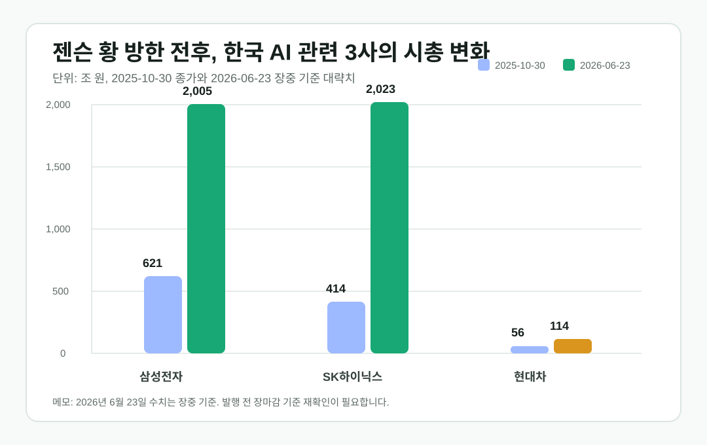
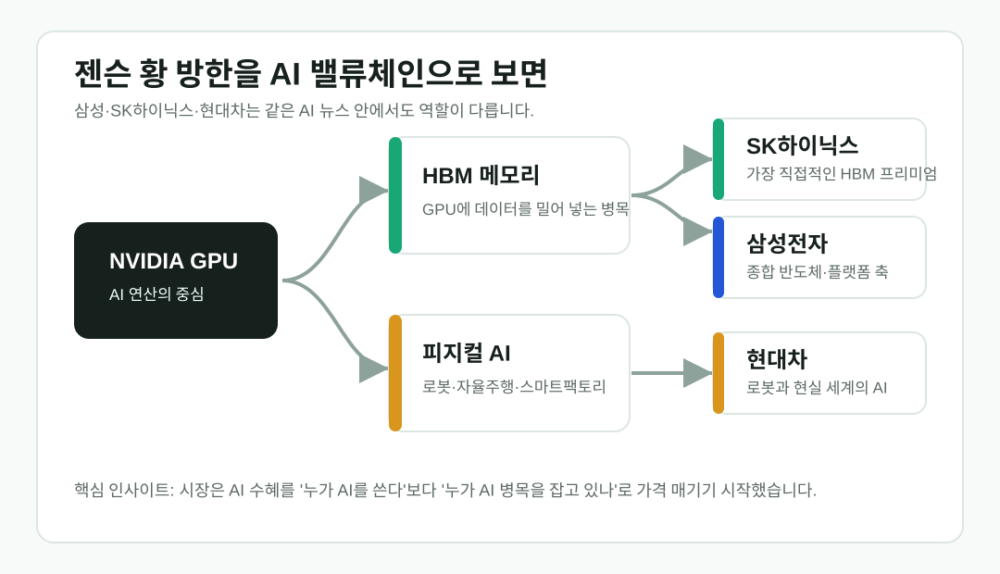

젠슨 황이 만난 한국 기업들, 8개월 뒤 시총 지도가 바뀌었다
2025년 10월 젠슨 황 엔비디아 CEO가 한국에서 삼성전자, SK하이닉스, 현대차 총수들과 만났을 때만 해도 이 장면은 “엔비디아와 한국 대기업의 AI 협력” 정도로 읽혔다. 그런데 2026년 6월, SK하이닉스가 삼성전자 시가총액을 위협하거나 넘어서는 장면이 나오면서 이 만남은 전혀 다른 의미를 갖게 됐다.


Thesis
AI 시대의 시장은 완성품보다 병목을 먼저 가격에 반영한다
이 글의 핵심은 “SK하이닉스 주가가 올랐다”가 아니다. 시장이 AI 인프라의 핵심 병목을 GPU 옆의 HBM 메모리에서 찾기 시작했고, 그 결과 한국 증시의 오랜 대장주 구도까지 흔들렸다는 점이다. 현대차는 본론의 중심은 아니지만, AI가 로봇과 자율주행으로 내려오는 “피지컬 AI”의 보조 사례로 함께 볼 만하다.

2025년 10월에는 삼성전자가 압도적이었다
젠슨 황이 서울 강남의 치킨집에서 삼성전자 이재용 회장, 현대차 정의선 회장과 만난 날을 기준으로 보면 구도는 분명했다. 2025년 10월 30일 종가 기준 대략 시가총액은 삼성전자가 약 621조 원, SK하이닉스가 약 414조 원, 현대차가 약 56조 원이었다. SK하이닉스가 이미 AI 메모리 수혜주로 강하게 평가받고 있었지만, 그래도 한국 증시의 상징은 여전히 삼성전자였다.
다음 거래일인 10월 31일에는 현대차 주가가 크게 움직였고, 엔비디아의 한국 AI 인프라 협력 보도도 이어졌다. 당시 시장은 엔비디아가 한국의 반도체, 자동차, 로봇, 클라우드 산업 전체와 연결된다는 점에 반응했다. 그러나 시간이 지나면서 가장 강한 프리미엄은 피지컬 AI보다 HBM 메모리 쪽에 먼저 붙었다.
| 기업 | 2025-10-30 대략 시총 | 2026-06-23 장중 대략 시총 | AI 관점의 역할 |
|---|---|---|---|
| 삼성전자 | 약 621조 원 | 약 2,005조 원 | 종합 반도체, 파운드리, 디바이스, 플랫폼까지 가진 거대 축 |
| SK하이닉스 | 약 414조 원 | 약 2,023조 원 | 엔비디아 AI 가속기에 필요한 HBM의 가장 직접적인 수혜 축 |
| 현대차 | 약 56조 원 | 약 114조 원 | 로봇, 자율주행, 스마트팩토리로 이어지는 피지컬 AI 보조 축 |
왜 SK하이닉스가 더 직접적인 AI 수혜주로 읽히나
생성형 AI 서버는 GPU만으로 돌아가지 않는다. 거대한 모델을 학습하고 추론하려면 GPU가 처리할 데이터를 매우 빠르게 공급해야 한다. 이때 필요한 것이 HBM, 즉 고대역폭 메모리다. AI 모델이 커질수록 연산 성능만큼이나 메모리 대역폭과 공급 안정성이 중요해진다. 그래서 시장은 AI 하드웨어 밸류체인 안에서 “누가 GPU를 만드는가” 다음 질문으로 “누가 GPU 옆의 병목을 잡고 있는가”를 보기 시작했다.
SK하이닉스는 이 질문에 가장 직접적으로 연결된다. 삼성전자도 메모리와 파운드리 역량을 모두 가진 핵심 기업이지만, 사업 구조가 훨씬 넓다. 스마트폰, 가전, 디스플레이, 파운드리, 범용 메모리까지 섞여 있기 때문에 HBM 프리미엄이 순수하게 반영되기 어렵다. 반면 SK하이닉스는 AI 메모리 수혜가 더 선명하게 보인다. 이번 시총 역전 또는 근접 현상은 그 차이를 시장이 가격으로 표현한 장면이다.

현대차는 주인공이 아니라 좋은 곁가지다
현대차를 이 글에 넣는 이유는 시총 1위 경쟁 때문이 아니다. 현대차는 HBM 수혜주가 아니다. 대신 엔비디아가 말하는 AI가 데이터센터 안에서 끝나지 않는다는 점을 보여준다. 로봇, 자율주행, 스마트팩토리처럼 현실 세계에서 움직이는 AI가 커지면 현대차와 보스턴 다이내믹스의 역할이 더 중요해질 수 있다.
그래서 현대차는 “AI가 화면 밖으로 나오는 방향”을 보여주는 보조 사례로 쓰는 것이 적절하다. 삼성전자와 SK하이닉스가 AI 인프라의 반도체 축이라면, 현대차는 그 인프라 위에서 움직일 산업 응용의 한 축이다. 글의 중심은 SK하이닉스와 삼성전자 비교에 두고, 현대차는 피지컬 AI라는 다음 장면을 암시하는 정도가 가장 깔끔하다.
상징적인 회동 사진은 원문에서 확인
치킨집 회동 사진은 이 글의 상징성이 가장 큰 장면이다. 다만 언론사 사진은 대부분 저작권 보호 대상이므로 직접 저장하거나 재업로드하지 않고, 원문 기사 링크로 연결한다. 본문 대표 이미지는 위의 퍼블릭 도메인 인물 사진, 자체 제작 그래프, 자체 제작 구조도를 사용했다.
투자 뉴스가 아니라 산업 구조 뉴스로 읽어야 한다
이 주제는 주가 전망으로 쓰면 금방 위험해진다. 시가총액은 하루에도 바뀌고, 삼성전자와 SK하이닉스의 순위도 엎치락뒤치락할 수 있다. 하지만 산업 구조의 변화는 더 오래 간다. AI 인프라가 커질수록 GPU, HBM, 패키징, 전력, 냉각, 데이터센터, 로봇까지 이어지는 병목 자산의 가치가 더 선명해진다.
젠슨 황이 한국에서 만난 기업들을 8개월 뒤 다시 보면 메시지는 명확하다. 한국의 AI 수혜는 하나의 회사에만 갇혀 있지 않다. 다만 시장이 지금 가장 강하게 가격을 붙이는 곳은 “AI를 활용하는 회사”보다 “AI가 돌아가기 위해 꼭 필요한 병목을 가진 회사”다. 그래서 이번 시총 변화는 단순한 순위 뉴스가 아니라, AI 하드웨어 시대의 가치가 어디에 먼저 쌓이는지를 보여주는 사례다.
출처와 확인 링크
발행 전 체크리스트
- 2026년 6월 23일 장마감 기준 삼성전자·SK하이닉스·현대차 시가총액을 다시 확인한다.
- 순위가 바뀌었으면 제목의 “바뀌었다”를 “흔들렸다” 또는 “엎치락뒤치락했다”로 조정한다.
- 언론사 사진은 직접 업로드하지 않고 원문 링크로만 둔다.
- 투자 추천처럼 읽히는 표현을 피하고, 산업 구조와 AI 하드웨어 병목 중심으로 설명한다.
Comments
댓글